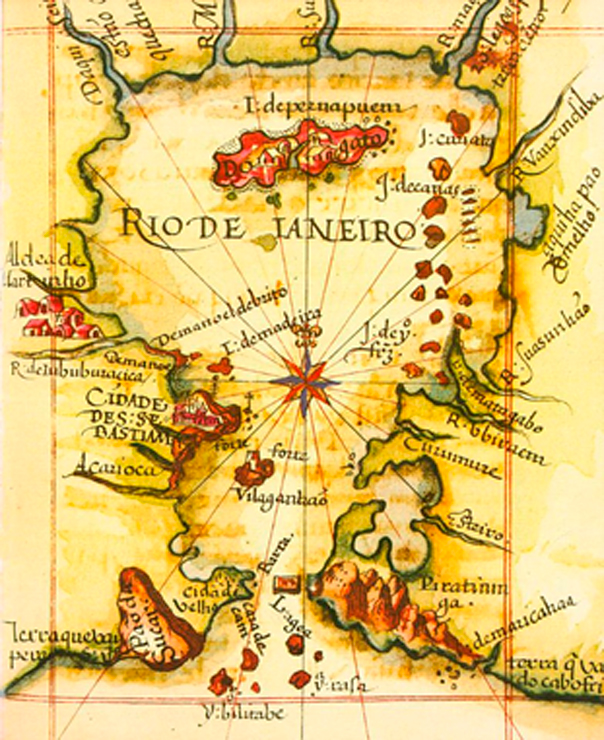
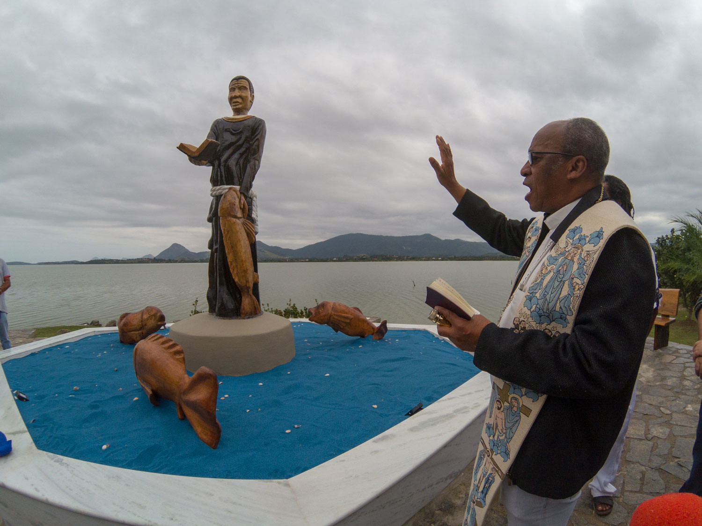
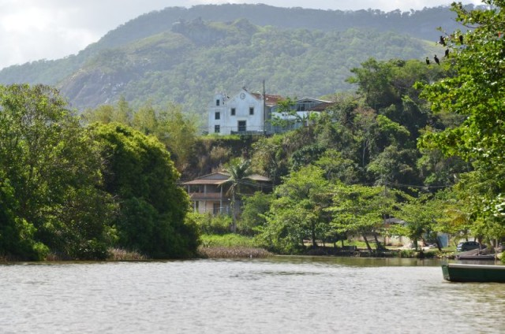
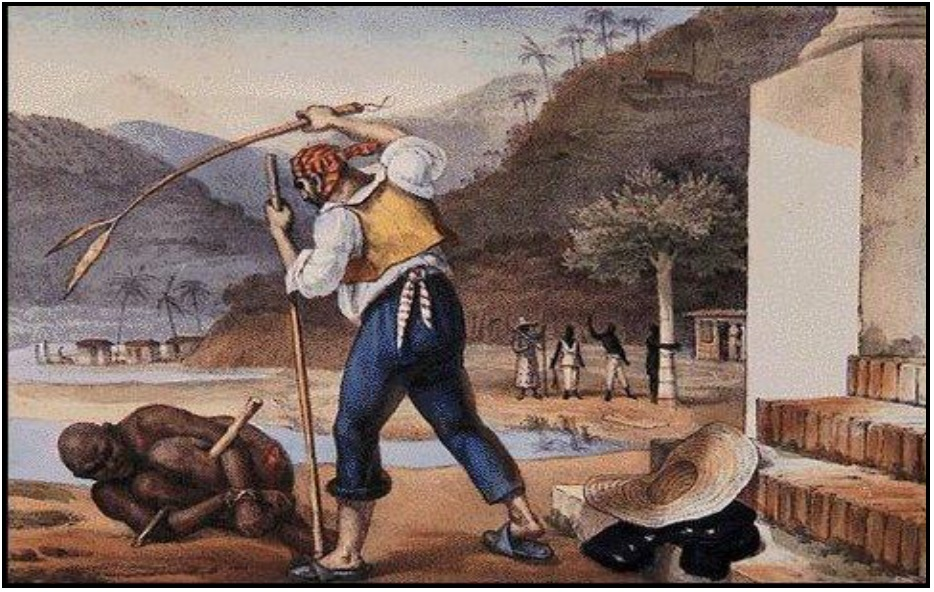
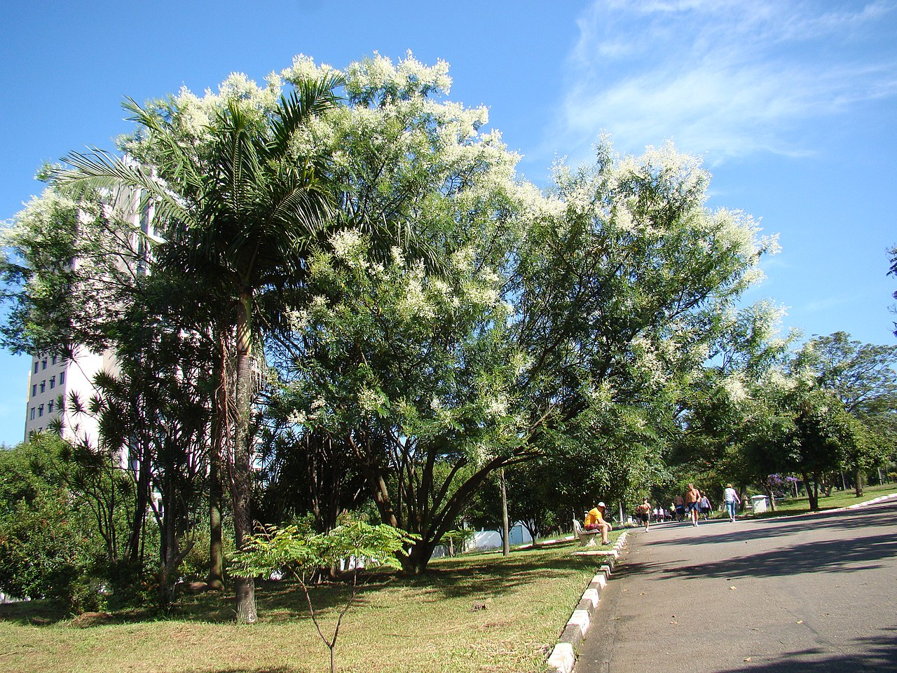
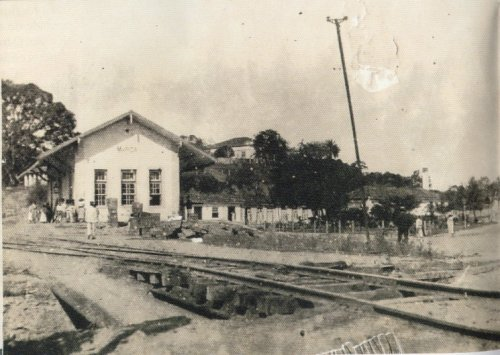
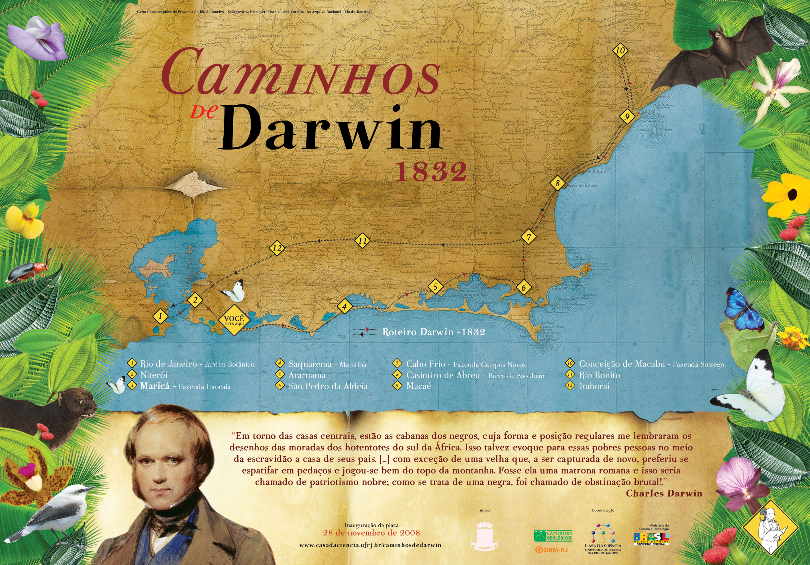

Localizada no litoral do estado do Rio de Janeiro, Maricá tem uma história que remonta ao século XVI, quando os primeiros colonizadores portugueses chegaram à região e começaram a povoar as margens das suas lagoas e praias.A colônia Maricá começou a ser povoada no início do século XVI, devido à necessidade da Coroa Portuguesa de defender o litoral de ataques dos corsários franceses. A partir de 1574, as terras foram doadas aos colonizadores portugueses, divididas em sesmarias (lotes de terras distribuídos em nome do rei de Portugal, com intenção de incentivar o cultivo em terras virgens) .


No ano de 1584, o padre jesuíta José de Anchieta protagonizou um dos episódios mais conhecidos da história local: a chamada “pesca milagrosa” na Lagoa de Araçatiba. Segundo relatos históricos, Anchieta teria indicado aos indígenas os melhores pontos e tipos de peixe para pescar, resultando em uma farta captura que ficou marcada na memória da região.

O primeiro centro efetivo de população, fundado por monges beneditinos em 1635, surgiu junto à Fazenda de São Bento, em São José do Imbassaí, onde foi construída a primeira capela dedicada à Nossa Senhora do Amparo.
Resistência Negra e Escravidão na Região

Durante o período colonial e até o século XIX, Maricá foi marcada pela presença e pela resistência de pessoas escravizadas. Estima-se que no início do século XIX, por volta de 1812, um quilombo de escravizados fugidos se formou na região, organizado como forma de resistência à escravidão e às duras condições impostas nas fazendas próximas. Essas comunidades representaram um importante capítulo da história local, enfrentando repressões e mantendo tradições de autonomia e luta por liberdade.

Em 1814, a vila foi elevada à condição de cidade com o nome de Santa Maria de Maricá, em homenagem à rainha D. Maria I de Portugal. O nome Maricá vem de uma árvore denominada Mimosa sepiaria Benth, popularmente conhecida como espinheiro-maricá, muito comum e abundante na região.

A Estrada de Ferro de Maricá também faz parte da história da cidade. Seu primeiro trecho, em 1888, ligava as estações de Alcântara e Rio do Ouro. Entre 1911 e 1940, a ferrovia viveu seu auge, e o trecho foi ampliado até Cabo Frio, onde registrava um grande volume de cargas da produção local. Com o declínio da atividade agrícola, os trechos foram sendo desativados até o encerramento definitivo, em 1966.

Já o naturalista britânico Charles Darwin incluiu Itaipuaçu em seu roteiro de pesquisas sobre fauna e flora da Mata Atlântica, em 1832. Os estudos resultaram em observações escritas no livro “A Origem das Espécies”, que tornou o cientista famoso no mundo todo. O circuito de trilhas por onde andou ficou conhecido como “Caminhos de Darwin” e é hoje uma atração turística de Maricá.